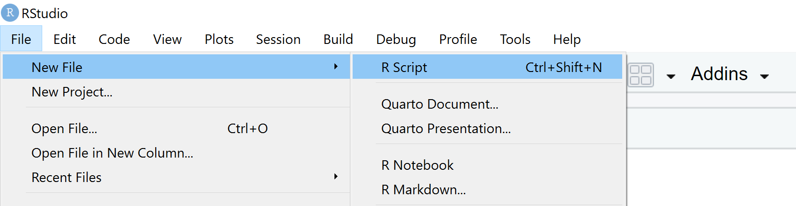

We like R and data.
We aren’t computer scientists – and that’s okay!
We will make lots of mistakes. Mistakes are funny. Please laugh along with us.

Let’s launch ourselves into the unknown and make a candy plot. With a little copy-pasting we can make an informative chart of everyone’s favorite candy.
Since you have the best taste, let’s make your candy BIG .
theme_ft_rc(base_size = 14).#----------- Install packages ---------------#
install.packages("ggplot2")
install.packages("readr")
install.packages("hrbrthemes")
#------------- Load packages ----------------#
library(ggplot2)
library(readr)
library(hrbrthemes)
#---------------- Candy data ------------------#
survey <- read_csv('candy,rating
"Snickers", 14
"Almond Joy", 40
"Hersheys Kisses", 16
"Nerds", 5
"Sour Patch Kids", 8')
This chart should appear in the lower right of RStudio.

Bonus
- Add another candy and rating to the data.
- Add your name to the subtitle.
- Delete the hashtag in front of the
scale_viridis...line.
- What happens when you re-run the code?
- Change the
show.legend =value toTRUE
- What happens?
Insert magic here…

Rey and BB8 posted a wanted ad for a data droid that can do some number crunching. If you want to help, you’ll need to submit an application.
Customize the application below to put your personal spin on a data droid looking for work.
#--------- Customize your Application -------------#
# Pick a droid model
## 4 Options: "Mouse", "R2D2", "Gonk", "C3PO"
droid <- "r2d2"
# Give your droid a nickname
nickname <- "Data Sweeper"
## Your top skill
skill <- "sweeping"
#------------- Submit --------------------#
# Ready to submit your application?
## -- Run all the lines above and then run the line below -or-
## -- Click the Source button at the top-right of the script screen (the one with the blue arrow). This will run everything in your script.
source("https://raw.githubusercontent.com/MPCA-data/R-Camp/main/static/modules/intro/droid_apps/submit_app.R")After a lot of flying text and some installations, something like this should appear.
# Optional
## Edit your personal introduction below
# Droid bio
intro <- "**Hello!** I am a classically trained data scientist living on planet Endor. Wherever I go I bring a supply of good energy. I currently work for the Oculus Corp, but I have been feeling rebellious lately. I love talking about urban forests and discussing true crime podcasts."
Let’s go find some trouble. While BB8 works on tracking down data for us from his droid friends, we’ll get to know his internal computer.
Let’s make a new project for our Jakku scrap analysis.
#commentLet’s load the readr package so we can use the read_csv() function to read the Jakku scrap data.

Lost in an ERROR message? Is something behaving strangely and want to know why? Want ideas for a new chart?
Go to Help! for troubleshooting, cheatsheets, and other learning resources.